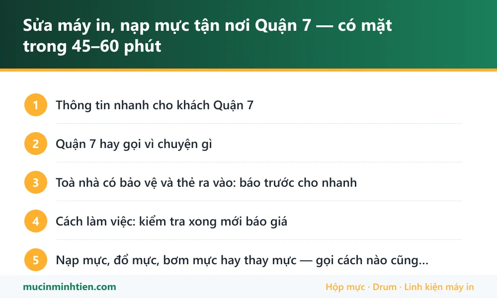

Sửa máy in, nạp mực tận nơi Quận 7 — có mặt trong 45–60 phút
Minh Tiến nhận sửa máy in và nạp mực tận nơi toàn Quận 7 — Phú Mỹ Hưng, Khu chế xuất Tân Thuận, Him Lam, Tân Hưng, Tân Quy. Gọi trước 45–60 phút là có kỹ thuật viên tới, mang sẵn hộp mực và vật tư theo đúng dòng máy khách báo. Nạp mực từ 80.000đ, kiểm tra xong mới báo giá.
Thông tin nhanh cho khách Quận 7
| Hạng mục | Chi tiết |
|---|---|
| Thời gian có mặt | 45–60 phút trong giờ hành chính; qua cầu Kênh Tẻ giờ cao điểm (7h30–8h30, 17h–18h30) có thể chậm hơn 15 phút |
| Khu vực nhận | Phú Mỹ Hưng, Khu chế xuất Tân Thuận, Him Lam, Tân Quy, Tân Hưng, Tân Kiểng, khu cảng Tân Thuận |
| Làm được tại chỗ | Nạp mực, thay drum – gạt – trục từ, vệ sinh máy, xử lý kẹt giấy, cài driver và chia sẻ máy in qua mạng |
| Phải mang về xưởng | Thay lô sấy trọn cụm, sửa bo formatter, sửa nguồn — có máy cho mượn nếu văn phòng cần in gấp |
| Hoá đơn | Có xuất VAT cho công ty — báo trước khi kỹ thuật viên tới để mang sẵn giấy tờ |
| Ngoài giờ | Nhận ca tối và cuối tuần cho toà nhà văn phòng, đặt lịch trước |
Quận 7 hay gọi vì chuyện gì
Quận 7 khác các quận khác ở chỗ tỷ lệ máy văn phòng cao hơn máy gia đình rất nhiều, và phần lớn là máy dùng chung cho cả phòng.
- Phú Mỹ Hưng và các toà văn phòng Tân Mỹ, Tân Phú: nhiều công ty nước ngoài, máy đa năng in màu khổ A4/A3 có scan và in hai mặt. Bệnh hay gặp là in lệch màu, kẹt giấy ở bộ đảo mặt và lỗi kết nối sau khi công ty đổi router.
- Khu chế xuất Tân Thuận: máy in laser đen trắng chạy khối lượng lớn cộng máy in mã vạch dán thùng hàng. Ở đây vật tư hao nhanh, thường tới lúc gọi là drum và lô sấy đã quá hạn từ lâu.
- Him Lam, Tân Hưng, Tân Quy: nhiều văn phòng nhỏ, phòng khám, trung tâm ngoại ngữ — máy để bàn Canon, HP, Brother, gọi chủ yếu vì hết mực và bản in bị mờ.
- Kho và công ty logistics quanh cảng Tân Thuận: máy in phiếu, máy in kim in nhiều liên, hay hỏng đầu kim và ruy băng.
Vì vậy khi khách Quận 7 gọi, kỹ thuật viên hỏi thêm một câu: máy dùng chung qua mạng hay cắm thẳng vào một máy tính. Hai trường hợp này cách xử lý khác nhau hoàn toàn, và hỏi trước giúp mang đúng đồ nghề.
Toà nhà có bảo vệ và thẻ ra vào: báo trước cho nhanh
Phần lớn toà nhà ở Phú Mỹ Hưng và khu chế xuất yêu cầu đăng ký khách trước, gửi xe đúng chỗ, có nơi phải mượn thẻ tầng. Khách báo giúp ba thứ khi đặt lịch thì kỹ thuật viên vào thẳng, không mất 20 phút ở quầy lễ tân:
- Tên công ty và số tầng.
- Tên người đứng ra đăng ký với lễ tân.
- Quy định riêng nếu có — ví dụ khu chế xuất cần giấy giới thiệu hoặc đăng ký trước một ngày.
Với văn phòng chỉ có thể cho vào ngoài giờ làm việc, đặt lịch buổi tối được, báo trước trong ngày.
Cách làm việc: kiểm tra xong mới báo giá
- Khách gọi hoặc nhắn Zalo, đọc tên model ghi ở mặt trước máy và mô tả bản in đang bị gì.
- Kỹ thuật viên chuẩn bị hộp mực, drum và vật tư đúng dòng máy đó rồi mới lên đường — đây là lý do câu đầu tiên luôn là hỏi model.
- Tới nơi kiểm tra, in thử, chỉ cho khách xem chỗ hỏng và báo giá. Khách đồng ý mới làm.
- Làm xong in thử lại trước mặt khách, hướng dẫn cách dùng để lâu hỏng hơn.
- Vật tư thay có bảo hành; hộp mực nạp bảo hành đúng lượng mực, kẹt hay lem trong thời gian bảo hành thì xử lý lại không tính tiền.
Nạp mực, đổ mực, bơm mực hay thay mực — gọi cách nào cũng là một việc
Khách Quận 7 gọi bằng đủ cách: văn phòng Phú Mỹ Hưng thường nói thay mực máy in, khách lẻ ở Tân Quy nói nạp mực, người quen máy phun gọi là bơm mực, có người gọi đổ mực. Bốn cách nói, cùng một việc: lấy hộp mực ra, vệ sinh, nạp bột mực mới vào rồi lắp lại và in thử.
Phân biệt cho đúng chỉ có hai trường hợp:
- Máy laser — nạp bột mực vào hộp mực (cartridge). Tính tiền theo hộp, 80.000–150.000đ.
- Máy phun — bơm mực nước vào bình chứa hoặc tép mực. Tính tiền theo màu, từ 60.000đ/màu.
Còn thay hộp mực mới đúng nghĩa là mua hộp khác lắp vào, không phải nạp lại. Kỹ thuật viên sẽ nói rõ hộp của anh chị còn nạp được mấy lần nữa trước khi quyết định.
Tất cả đều làm tại nhà hoặc tại văn phòng, khách không phải mang máy đi đâu.
Bảng giá dịch vụ tại Quận 7
| Hạng mục | Áp dụng cho | Giá tham khảo |
|---|---|---|
| Nạp mực hộp mực laser | HP, Canon, Brother (12A, 85A, 337, TN-2380…) | 80.000 – 150.000 đ |
| Bơm mực máy in phun | Epson, Canon dòng phun | từ 60.000 đ/màu |
| Thay trống (drum) | Máy in laser HP, Canon, Brother | từ 120.000 đ |
| Vệ sinh máy in tận nơi | Tất cả các dòng | từ 100.000 đ |
| Xử lý kẹt giấy, không kéo giấy | Laser và phun | Kiểm tra rồi báo giá |
| Cài driver, chia sẻ máy in qua mạng LAN | Cả phòng nhiều máy tính | Kiểm tra rồi báo giá |
Giá vật tư lấy đúng theo kho — xem bảng giá 773 mã. Kỹ thuật viên kiểm tra và báo giá trước khi làm; khách đồng ý mới thay.
Vật tư mang sẵn theo xe khi tới Quận 7
Xe đi Quận 7 mang sẵn nhóm vật tư hợp với máy văn phòng ở khu này, nên phần lớn ca xong ngay trong một lần tới:
| Vật tư mang theo | Dùng cho | Ghi chú |
|---|---|---|
| Hộp mực 12A, 85A, 35A, CF226A | Canon LBP2900, HP 1102, M402 và các máy để bàn phổ biến | Xem <a href="../../muc-in/">trang mã mực</a> để biết máy mình dùng mã nào |
| Mực Canon 337, Brother TN-2380 | Canon MF3010, MF249dw · Brother 2321D, 2366DW | Hai dòng gặp nhiều nhất ở văn phòng nhỏ |
| Drum, gạt mực, trục từ rời | Thay lẻ rẻ hơn thay cả hộp | Đọc <a href="../../huong-dan/may-in-bi-soc-den-doc/">bài sọc đen dọc</a> để biết khi nào cần |
| Mực Epson 003, 664 | Máy phun bình mực ở phòng kế toán, phòng khám | Kèm dụng cụ vệ sinh đầu phun |
| Quả đào, bố thắng | Máy kéo nhiều tờ hoặc không kéo giấy | Thay theo cặp cho bền |
Lỗi hay gặp ở Quận 7 và bài hướng dẫn tự xử lý
Nhiều ca chỉ cần làm theo bài là xong, không phải gọi thợ. Đọc trước cho đỡ tốn tiền:
- Máy in bị sọc đen dọc — hay gặp ở máy chạy khối lượng lớn trong khu chế xuất
- Máy tính không nhận máy in — thường xảy ra sau khi công ty đổi router hoặc đổi máy tính
- Cách in 2 mặt trên Canon, HP, Brother, Epson — câu hỏi nhiều nhất từ văn phòng dùng máy đa năng
- Driver Canon 2900 cho Windows 11, 10 — máy cũ nhưng còn rất nhiều ở văn phòng Quận 7
- Máy in không kéo giấy — máy chạy nhiều thì quả đào mòn trước tiên

trueCâu hỏi thường gặp — khách Quận 7
Quận 7 có tính phí đi lại không?
Văn phòng ở Phú Mỹ Hưng cần đăng ký khách với lễ tân, có hỗ trợ không?
Cả phòng dùng chung một máy in qua mạng, sửa xong có phải cài lại từng máy không?
Có xuất hoá đơn VAT cho công ty không?
Máy phải mang về xưởng thì bao lâu xong, có máy dùng tạm không?
Ngoài giờ hành chính hoặc cuối tuần có nhận không?
Nạp mực máy in quận 7 giá bao nhiêu?
Có nhận nạp mực tại nhà ở Phú Mỹ Hưng không?
Khu vực phục vụ khác
- Nạp mực, sửa máy in tận nơi Quận 4 — sát trung tâm, tới nhanh
- Sửa máy in, nạp mực tận nơi Bình Chánh — Trung Sơn, Bình Hưng, Vĩnh Lộc
- Sửa máy in, nạp mực tận nơi Quận 8 — có mặt 30–45 phút, báo giá trước
- Sửa máy in, nạp mực tại phường Chánh Hưng — tới trong 30 phút
- Sửa máy in, nạp mực tận nơi Nhà Bè — nhận cả khu công nghiệp Hiệp Phước